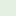

<!doctype html>
<html lang="en">
    <head>
        <meta charset="utf-8">
        <meta http-equiv="X-UA-Compatible" content="IE=edge">
        <meta name="viewport" content="initial-scale=1,user-scalable=no,maximum-scale=1,width=device-width">
        <meta name="mobile-web-app-capable" content="yes">
        <meta name="apple-mobile-web-app-capable" content="yes">
        <link rel="stylesheet" href="css/leaflet.css">
        <link rel="stylesheet" href="css/L.Control.Layers.Tree.css">
        <link rel="stylesheet" href="css/L.Control.Locate.min.css">
        <link rel="stylesheet" href="css/qgis2web.css">
        <link rel="stylesheet" href="css/fontawesome-all.min.css">
        <link rel="stylesheet" href="css/leaflet-control-geocoder.Geocoder.css">
        <link rel="stylesheet" href="css/leaflet-measure.css">
        <style>
        html, body, #map {
            width: 100%;
            height: 100%;
            padding: 0;
            margin: 0;
        }
        </style>
        <title></title>
    </head>
    <body>
        <div id="map">
        </div>
        <script src="js/qgis2web_expressions.js"></script>
        <script src="js/leaflet.js"></script>
        <script src="js/L.Control.Layers.Tree.min.js"></script>
        <script src="js/L.Control.Locate.min.js"></script>
        <script src="js/leaflet.rotatedMarker.js"></script>
        <script src="js/leaflet.pattern.js"></script>
        <script src="js/leaflet-hash.js"></script>
        <script src="js/Autolinker.min.js"></script>
        <script src="js/rbush.min.js"></script>
        <script src="js/labelgun.min.js"></script>
        <script src="js/labels.js"></script>
        <script src="js/leaflet-control-geocoder.Geocoder.js"></script>
        <script src="js/leaflet-measure.js"></script>
        <script src="data/NDVI_1.js"></script>
        <script src="data/LandSurfaceTemperature_2.js"></script>
        <script>
        var highlightLayer;
        function highlightFeature(e) {
            highlightLayer = e.target;

            if (e.target.feature.geometry.type === 'LineString' || e.target.feature.geometry.type === 'MultiLineString') {
              highlightLayer.setStyle({
                color: '#ffff00',
              });
            } else {
              highlightLayer.setStyle({
                fillColor: '#ffff00',
                fillOpacity: 1
              });
            }
            highlightLayer.openPopup();
        }
        var map = L.map('map', {
            zoomControl:true, maxZoom:28, minZoom:1
        }).fitBounds([[40.38715687955813,-3.743603052099079],[40.465260904254094,-3.649939065514382]]);
        var hash = new L.Hash(map);
        map.attributionControl.setPrefix('<a href="https://github.com/tomchadwin/qgis2web" target="_blank">qgis2web</a> &middot; <a href="https://leafletjs.com" title="A JS library for interactive maps">Leaflet</a> &middot; <a href="https://qgis.org">QGIS</a>');
        var autolinker = new Autolinker({truncate: {length: 30, location: 'smart'}});
        function removeEmptyRowsFromPopupContent(content, feature) {
         var tempDiv = document.createElement('div');
         tempDiv.innerHTML = content;
         var rows = tempDiv.querySelectorAll('tr');
         for (var i = 0; i < rows.length; i++) {
             var td = rows[i].querySelector('td.visible-with-data');
             var key = td ? td.id : '';
             if (td && td.classList.contains('visible-with-data') && feature.properties[key] == null) {
                 rows[i].parentNode.removeChild(rows[i]);
             }
         }
         return tempDiv.innerHTML;
        }
        document.querySelector(".leaflet-popup-pane").addEventListener("load", function(event) {
          var tagName = event.target.tagName,
            popup = map._popup;
          // Also check if flag is already set.
          if (tagName === "IMG" && popup && !popup._updated) {
            popup._updated = true; // Set flag to prevent looping.
            popup.update();
          }
        }, true);
        L.control.locate({locateOptions: {maxZoom: 19}}).addTo(map);
        var measureControl = new L.Control.Measure({
            position: 'topleft',
            primaryLengthUnit: 'meters',
            secondaryLengthUnit: 'kilometers',
            primaryAreaUnit: 'sqmeters',
            secondaryAreaUnit: 'hectares'
        });
        measureControl.addTo(map);
        document.getElementsByClassName('leaflet-control-measure-toggle')[0]
        .innerHTML = '';
        document.getElementsByClassName('leaflet-control-measure-toggle')[0]
        .className += ' fas fa-ruler';
        var bounds_group = new L.featureGroup([]);
        function setBounds() {
        }
        map.createPane('pane_OSMStandard_0');
        map.getPane('pane_OSMStandard_0').style.zIndex = 400;
        var layer_OSMStandard_0 = L.tileLayer('http://tile.openstreetmap.org/{z}/{x}/{y}.png', {
            pane: 'pane_OSMStandard_0',
            opacity: 1.0,
            attribution: '<a href="https://www.openstreetmap.org/copyright">© OpenStreetMap contributors, CC-BY-SA</a>',
            minZoom: 1,
            maxZoom: 28,
            minNativeZoom: 0,
            maxNativeZoom: 19
        });
        layer_OSMStandard_0;
        map.addLayer(layer_OSMStandard_0);
        function pop_NDVI_1(feature, layer) {
            layer.on({
                mouseout: function(e) {
                    for (var i in e.target._eventParents) {
                        if (typeof e.target._eventParents[i].resetStyle === 'function') {
                            e.target._eventParents[i].resetStyle(e.target);
                        }
                    }
                    if (typeof layer.closePopup == 'function') {
                        layer.closePopup();
                    } else {
                        layer.eachLayer(function(feature){
                            feature.closePopup()
                        });
                    }
                },
                mouseover: highlightFeature,
            });
            var popupContent = '<table>\
                    <tr>\
                        <td class="visible-with-data" id="NDVI"colspan="2"><strong>NDVI</strong><br />' + (feature.properties['NDVI'] !== null ? autolinker.link(feature.properties['NDVI'].toLocaleString()) : '') + '</td>\
                    </tr>\
                </table>';
            layer.bindPopup(popupContent, {maxHeight: 400});
            var popup = layer.getPopup();
            var content = popup.getContent();
            var updatedContent = removeEmptyRowsFromPopupContent(content, feature);
            popup.setContent(updatedContent);
        }

        function style_NDVI_1_0(feature) {
            if (feature.properties['NDVI'] >= -1.000000 && feature.properties['NDVI'] <= 0.000000 ) {
                return {
                pane: 'pane_NDVI_1',
                stroke: false, 
                fill: true,
                fillOpacity: 1,
                fillColor: 'rgba(0,123,254,1.0)',
                interactive: true,
            }
            }
            if (feature.properties['NDVI'] >= 0.000000 && feature.properties['NDVI'] <= 0.200000 ) {
                return {
                pane: 'pane_NDVI_1',
                stroke: false, 
                fill: true,
                fillOpacity: 1,
                fillColor: 'rgba(180,142,195,0.6901960784313725)',
                interactive: true,
            }
            }
            if (feature.properties['NDVI'] >= 0.200000 && feature.properties['NDVI'] <= 0.400000 ) {
                return {
                pane: 'pane_NDVI_1',
                stroke: false, 
                fill: true,
                fillOpacity: 1,
                fillColor: 'rgba(225,213,231,0.6901960784313725)',
                interactive: true,
            }
            }
            if (feature.properties['NDVI'] >= 0.400000 && feature.properties['NDVI'] <= 0.600000 ) {
                return {
                pane: 'pane_NDVI_1',
                stroke: false, 
                fill: true,
                fillOpacity: 1,
                fillColor: 'rgba(215,236,213,0.6901960784313725)',
                interactive: true,
            }
            }
            if (feature.properties['NDVI'] >= 0.600000 && feature.properties['NDVI'] <= 0.800000 ) {
                return {
                pane: 'pane_NDVI_1',
                stroke: false, 
                fill: true,
                fillOpacity: 1,
                fillColor: 'rgba(132,202,139,0.6901960784313725)',
                interactive: true,
            }
            }
            if (feature.properties['NDVI'] >= 0.800000 && feature.properties['NDVI'] <= 1.000000 ) {
                return {
                pane: 'pane_NDVI_1',
                stroke: false, 
                fill: true,
                fillOpacity: 1,
                fillColor: 'rgba(0,136,55,0.6901960784313725)',
                interactive: true,
            }
            }
        }
        map.createPane('pane_NDVI_1');
        map.getPane('pane_NDVI_1').style.zIndex = 401;
        map.getPane('pane_NDVI_1').style['mix-blend-mode'] = 'normal';
        var layer_NDVI_1 = new L.geoJson(json_NDVI_1, {
            attribution: '',
            interactive: true,
            dataVar: 'json_NDVI_1',
            layerName: 'layer_NDVI_1',
            pane: 'pane_NDVI_1',
            onEachFeature: pop_NDVI_1,
            style: style_NDVI_1_0,
        });
        bounds_group.addLayer(layer_NDVI_1);
        map.addLayer(layer_NDVI_1);
        function pop_LandSurfaceTemperature_2(feature, layer) {
            layer.on({
                mouseout: function(e) {
                    for (var i in e.target._eventParents) {
                        if (typeof e.target._eventParents[i].resetStyle === 'function') {
                            e.target._eventParents[i].resetStyle(e.target);
                        }
                    }
                    if (typeof layer.closePopup == 'function') {
                        layer.closePopup();
                    } else {
                        layer.eachLayer(function(feature){
                            feature.closePopup()
                        });
                    }
                },
                mouseover: highlightFeature,
            });
            var popupContent = '<table>\
                    <tr>\
                        <td class="visible-with-data" id="Temperature (°C)"colspan="2"><strong>Temperature (°C)</strong><br />' + (feature.properties['Temperature (°C)'] !== null ? autolinker.link(feature.properties['Temperature (°C)'].toLocaleString()) : '') + '</td>\
                    </tr>\
                </table>';
            layer.bindPopup(popupContent, {maxHeight: 400});
            var popup = layer.getPopup();
            var content = popup.getContent();
            var updatedContent = removeEmptyRowsFromPopupContent(content, feature);
            popup.setContent(updatedContent);
        }

        function style_LandSurfaceTemperature_2_0(feature) {
            if (feature.properties['Temperature (°C)'] >= 25.000000 && feature.properties['Temperature (°C)'] <= 27.000000 ) {
                return {
                pane: 'pane_LandSurfaceTemperature_2',
                stroke: false, 
                fill: true,
                fillOpacity: 1,
                fillColor: 'rgba(44,123,182,0.6901960784313725)',
                interactive: true,
            }
            }
            if (feature.properties['Temperature (°C)'] >= 27.000000 && feature.properties['Temperature (°C)'] <= 29.000000 ) {
                return {
                pane: 'pane_LandSurfaceTemperature_2',
                stroke: false, 
                fill: true,
                fillOpacity: 1,
                fillColor: 'rgba(97,162,203,0.6901960784313725)',
                interactive: true,
            }
            }
            if (feature.properties['Temperature (°C)'] >= 29.000000 && feature.properties['Temperature (°C)'] <= 30.000000 ) {
                return {
                pane: 'pane_LandSurfaceTemperature_2',
                stroke: false, 
                fill: true,
                fillOpacity: 1,
                fillColor: 'rgba(151,202,225,0.6901960784313725)',
                interactive: true,
            }
            }
            if (feature.properties['Temperature (°C)'] >= 30.000000 && feature.properties['Temperature (°C)'] <= 31.000000 ) {
                return {
                pane: 'pane_LandSurfaceTemperature_2',
                stroke: false, 
                fill: true,
                fillOpacity: 1,
                fillColor: 'rgba(196,228,221,0.6901960784313725)',
                interactive: true,
            }
            }
            if (feature.properties['Temperature (°C)'] >= 31.000000 && feature.properties['Temperature (°C)'] <= 32.000000 ) {
                return {
                pane: 'pane_LandSurfaceTemperature_2',
                stroke: false, 
                fill: true,
                fillOpacity: 1,
                fillColor: 'rgba(236,246,200,0.6901960784313725)',
                interactive: true,
            }
            }
            if (feature.properties['Temperature (°C)'] >= 32.000000 && feature.properties['Temperature (°C)'] <= 33.000000 ) {
                return {
                pane: 'pane_LandSurfaceTemperature_2',
                stroke: false, 
                fill: true,
                fillOpacity: 1,
                fillColor: 'rgba(255,237,170,0.6901960784313725)',
                interactive: true,
            }
            }
            if (feature.properties['Temperature (°C)'] >= 33.000000 && feature.properties['Temperature (°C)'] <= 34.000000 ) {
                return {
                pane: 'pane_LandSurfaceTemperature_2',
                stroke: false, 
                fill: true,
                fillOpacity: 1,
                fillColor: 'rgba(254,203,130,0.6901960784313725)',
                interactive: true,
            }
            }
            if (feature.properties['Temperature (°C)'] >= 34.000000 && feature.properties['Temperature (°C)'] <= 35.000000 ) {
                return {
                pane: 'pane_LandSurfaceTemperature_2',
                stroke: false, 
                fill: true,
                fillOpacity: 1,
                fillColor: 'rgba(250,163,92,0.6901960784313725)',
                interactive: true,
            }
            }
            if (feature.properties['Temperature (°C)'] >= 35.000000 && feature.properties['Temperature (°C)'] <= 36.000000 ) {
                return {
                pane: 'pane_LandSurfaceTemperature_2',
                stroke: false, 
                fill: true,
                fillOpacity: 1,
                fillColor: 'rgba(233,94,60,0.6901960784313725)',
                interactive: true,
            }
            }
            if (feature.properties['Temperature (°C)'] >= 36.000000 && feature.properties['Temperature (°C)'] <= 39.000000 ) {
                return {
                pane: 'pane_LandSurfaceTemperature_2',
                stroke: false, 
                fill: true,
                fillOpacity: 1,
                fillColor: 'rgba(215,25,28,0.6901960784313725)',
                interactive: true,
            }
            }
        }
        map.createPane('pane_LandSurfaceTemperature_2');
        map.getPane('pane_LandSurfaceTemperature_2').style.zIndex = 402;
        map.getPane('pane_LandSurfaceTemperature_2').style['mix-blend-mode'] = 'normal';
        var layer_LandSurfaceTemperature_2 = new L.geoJson(json_LandSurfaceTemperature_2, {
            attribution: '',
            interactive: true,
            dataVar: 'json_LandSurfaceTemperature_2',
            layerName: 'layer_LandSurfaceTemperature_2',
            pane: 'pane_LandSurfaceTemperature_2',
            onEachFeature: pop_LandSurfaceTemperature_2,
            style: style_LandSurfaceTemperature_2_0,
        });
        bounds_group.addLayer(layer_LandSurfaceTemperature_2);
        map.addLayer(layer_LandSurfaceTemperature_2);
        map.createPane('pane_RGBStudyArea_3');
        map.getPane('pane_RGBStudyArea_3').style.zIndex = 403;
        var img_RGBStudyArea_3 = 'data/RGBStudyArea_3.png';
        var img_bounds_RGBStudyArea_3 = [[40.40079802860717,-3.7386389451376107],[40.43907181536186,-3.6661104213411004]];
        var layer_RGBStudyArea_3 = new L.imageOverlay(img_RGBStudyArea_3,
                                              img_bounds_RGBStudyArea_3,
                                              {pane: 'pane_RGBStudyArea_3'});
        bounds_group.addLayer(layer_RGBStudyArea_3);
        map.addLayer(layer_RGBStudyArea_3);
        var osmGeocoder = new L.Control.Geocoder({
            collapsed: true,
            position: 'topleft',
            text: 'Search',
            title: 'Testing'
        }).addTo(map);
        document.getElementsByClassName('leaflet-control-geocoder-icon')[0]
        .className += ' fa fa-search';
        document.getElementsByClassName('leaflet-control-geocoder-icon')[0]
        .title += 'Search for a place';
        var baseMaps = {};
        var overlaysTree = [
            {label: "RGB Study Area", layer: layer_RGBStudyArea_3},
            {label: 'Land Surface Temperature<br /><table><tr><td style="text-align: center;"></td><td>25 - 27</td></tr><tr><td style="text-align: center;"></td><td>27 - 29</td></tr><tr><td style="text-align: center;"></td><td>29 - 30</td></tr><tr><td style="text-align: center;"></td><td>30 - 31</td></tr><tr><td style="text-align: center;"></td><td>31 - 32</td></tr><tr><td style="text-align: center;"></td><td>32 - 33</td></tr><tr><td style="text-align: center;"></td><td>33 - 34</td></tr><tr><td style="text-align: center;"></td><td>34 - 35</td></tr><tr><td style="text-align: center;"></td><td>35 - 36</td></tr><tr><td style="text-align: center;"></td><td>36 - 39</td></tr></table>', layer: layer_LandSurfaceTemperature_2},
            {label: 'NDVI<br /><table><tr><td style="text-align: center;"></td><td>Water (-1.0 - 0.0)</td></tr><tr><td style="text-align: center;"></td><td>0 - 0.2</td></tr><tr><td style="text-align: center;"></td><td>0.2 - 0.4</td></tr><tr><td style="text-align: center;"></td><td>0.4 - 0.6</td></tr><tr><td style="text-align: center;"></td><td>0.6 - 0.8</td></tr><tr><td style="text-align: center;"></td><td>0.8 - 1</td></tr></table>', layer: layer_NDVI_1},
            {label: "OSM Standard", layer: layer_OSMStandard_0},]
        var lay = L.control.layers.tree(null, overlaysTree,{
            //namedToggle: true,
            //selectorBack: false,
            //closedSymbol: '&#8862; &#x1f5c0;',
            //openedSymbol: '&#8863; &#x1f5c1;',
            //collapseAll: 'Collapse all',
            //expandAll: 'Expand all',
            collapsed: false, 
        });
        lay.addTo(map);
        setBounds();
        L.ImageOverlay.include({
            getBounds: function () {
                return this._bounds;
            }
        });
        </script>
    </body>
</html>
